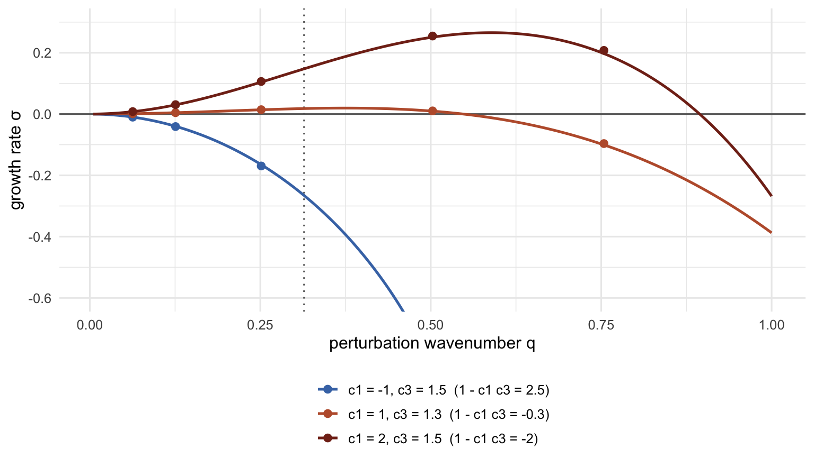
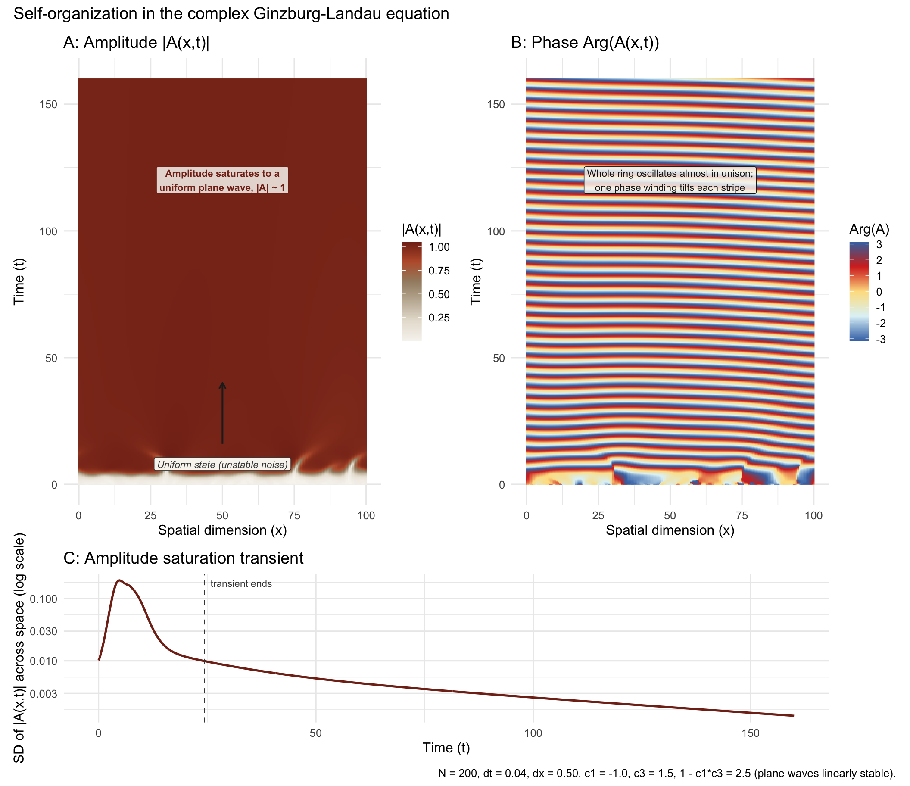
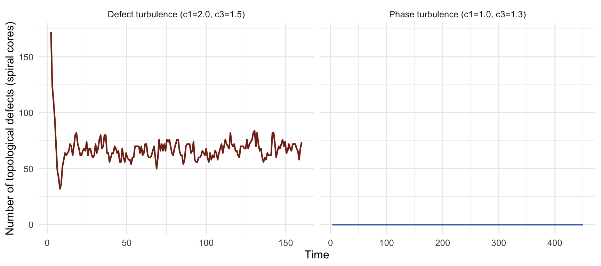

# Warm editorial-styled color map (Alabaster to Terracotta/Crimson) for |A|
col_palette <- colorRampPalette(c("#f7f5f0", "#e8e1d5", "#c5b8a5", "#a38d72", "#bd5d38", "#822c1a"))(100)
# Circular/periodic color palette for the cyclic phase variable [-pi, pi]
phase_colors <- colorRampPalette(c("#4575b4", "#e0f3f8", "#fee090", "#d73027", "#4575b4"))(100)
N <- 200 # number of spatial grid points on the periodic ring
L <- 100.0 # domain length
dx <- L / N # spatial step
dt <- 0.04 # time step (dt < dx^2 / 2 keeps the explicit diffusion term stable)
steps <- 4000 # total time steps
save_interval <- 8 # save every 8th frame
# c1 = -1.0, c3 = 1.5: checked against the Benjamin-Feir-Newell criterion below
c1 <- -1.0
c3 <- 1.5Stir a shallow pan of fluid unevenly heated from below, run the Belousov-Zhabotinsky chemical reaction in a dish, or couple an array of lasers together, and — despite having nothing else in common — all three systems can pass through a transition where a uniform, quiescent state gives way to a sea of traveling waves. Remarkably, close to that transition, the envelope of the emerging pattern in all three systems obeys the same one equation: the complex Ginzburg-Landau equation (CGLE). This explainer works through where that equation comes from, what its two free parameters control, and what its exact plane-wave solutions predict — then checks those predictions numerically against a small 1D simulation, including a case where the amplitude field and the phase field turn out to be responsible for genuinely different pieces of the visible pattern.
From Landau’s theory of phase transitions to a superconducting order parameter
The story starts with Lev Landau’s 1930s mean-field theory of second-order phase transitions: expand the free energy of a system as a power series in a small “order parameter” \(\psi\) that vanishes above the critical temperature and grows continuously below it, keep only the lowest-order terms allowed by symmetry, and minimize. In 1950, Vitaly Ginzburg and Landau extended this idea to superconductivity, treating the density of superconducting charge carriers as a complex order parameter \(\psi(\mathbf{x})\) whose phase encodes the macroscopic quantum coherence of the superconducting state, and whose magnitude vanishes at the transition to the normal metal (Ginzburg and Landau 1950). The Ginzburg-Landau free energy functional, minimized over \(\psi\), gives a static nonlinear equation for \(\psi(\mathbf{x})\) — a real diffusion-like term coupling neighboring points in space, plus a cubic term that saturates the growth of \(|\psi|\).
That static, real-coefficient equation is the ancestor of the one simulated below, but two more ingredients are needed to get there: the equation has to become dynamical (an equation of motion, not just an energy to minimize), and its coefficients have to become complex.
Amplitude equations and the road to a complex equation
The dynamical step came from a different direction entirely: pattern formation in fluids. Near the onset of Rayleigh-Bénard convection — the striped or hexagonal patterns that appear when a fluid layer is heated from below past a critical temperature gradient — Newell and Whitehead showed that the envelope of the convection rolls (not the fast-oscillating roll pattern itself, but the slowly-varying amplitude modulating it) obeys a real Ginzburg-Landau equation, derived by a weakly nonlinear multiple-scales expansion around the instability threshold (Newell and Whitehead 1969). This is the general mechanism by which Ginzburg-Landau-type equations arise: whenever a spatially extended system crosses a bifurcation — a stationary instability (Turing-type) or an oscillatory one (Hopf-type) — sufficiently close to onset, the details of the microscopic equations wash out, and the long-wavelength, slow-time envelope of the pattern is forced by symmetry and scaling into one of a small number of universal “normal form” equations. This is the same universality argument used throughout bifurcation theory (see the companion explainer on Langevin dynamics and bifurcation for a related but distinct flavor of symmetry-breaking): the amplitude equation doesn’t care about the chemistry of the Belousov-Zhabotinsky reaction or the viscosity of the convecting fluid, only about the type of instability and a couple of real numbers describing it.
The complex Ginzburg-Landau equation is what falls out of this same argument for an oscillatory (Hopf) instability in an extended medium: a spatially distributed field of identical, weakly coupled oscillators, each individually just past the threshold of sustained self-oscillation. Yoshiki Kuramoto derived exactly this reduction for reaction-diffusion systems modeling chemical oscillators — the mathematical root of both the CGLE and the more famous Kuramoto model of coupled-oscillator synchronization — and used it to explain the onset of “chemical turbulence” in the Belousov-Zhabotinsky reaction (Kuramoto 1984). Because the underlying oscillation is complex (it has both an amplitude and a phase), its slowly-varying envelope \(A(x,t)\) is a complex number too, and the coefficients that were real in the static Ginzburg-Landau theory pick up imaginary parts. Cross and Hohenberg’s canonical review of pattern formation situates the CGLE as one member of a small family of universal amplitude equations that recur across fluid dynamics, nonlinear optics, and chemical physics (Cross and Hohenberg 1993), and Aranson and Kramer’s dedicated review catalogs just how rich its behavior is — plane waves, spiral defects, and full spatiotemporal chaos, all from the same three-term equation (Aranson and Kramer 2002).
The equation
The version simulated here, in one spatial dimension with periodic boundary conditions, is
\[ \frac{\partial A}{\partial t} = A + (1 + i c_1)\frac{\partial^2 A}{\partial x^2} - (1 - i c_3)\,|A|^2 A, \]
where \(A(x,t) \in \mathbb{C}\) is the complex envelope, and \(c_1, c_3 \in \mathbb{R}\) are the two free parameters of the model (their coefficients on the linear growth and cubic terms have been rescaled to 1 by an appropriate choice of time, space, and amplitude units — the genuinely universal content of the equation is just \(c_1\) and \(c_3\)). Reading it term by term:
- \(A\): linear growth. Every point is individually just past a Hopf bifurcation, so left alone (no coupling), \(|A|\) would grow exponentially from any small perturbation. This is what makes the flat \(A=0\) state in the simulation below unstable to the tiny initial noise.
- \((1+ic_1)\,\partial^2_x A\): spatial coupling between neighbors. The real part (coefficient 1) is ordinary diffusion, which smooths out spatial differences in amplitude. The imaginary part, \(ic_1\,\partial^2_x A\), has no analogue in the static Ginzburg-Landau theory: it couples spatial curvature into the local phase, which is what lets a spatially extended field of oscillators lock into traveling waves rather than just synchronizing to a spatially uniform, purely time-oscillating state. \(c_1\) is often called the linear dispersion coefficient.
- \(-(1-ic_3)\,|A|^2 A\): cubic self-saturation. The real part is the same amplitude-limiting nonlinearity as in the static theory — it’s what stops the linear growth term from blowing up, pinning \(|A|\) near 1 once the system saturates. The imaginary part, \(ic_3|A|^2 A\), is a nonlinear frequency shift: the local oscillation frequency depends on the local amplitude, the way a Kerr-nonlinear optical medium’s refractive index depends on light intensity. \(c_3\) is the nonlinear frequency-renormalization coefficient.
Plane waves and the Benjamin-Feir-Newell criterion
Before running the simulation, it’s worth asking what the CGLE predicts analytically, because the prediction is exact and gives a sanity check for the numerics. The simplest nontrivial solutions are traveling plane waves, \(A(x,t) = R\,e^{i(kx - \omega t)}\) with constant real amplitude \(R\) and wavenumber \(k\). Substituting into the equation and separating real and imaginary parts gives
\[ R^2 = 1 - k^2, \qquad \omega = c_1 k^2 - c_3 R^2, \]
so a family of plane-wave solutions exists for every \(|k| < 1\), with larger \(|k|\) forced to run at correspondingly smaller amplitude. But existence isn’t the same as stability: a plane wave can be an exact solution of the equation and still be destroyed by long-wavelength perturbations. Linearizing around a plane wave and analyzing the resulting perturbation growth rate gives the Benjamin-Feir-Newell instability criterion. In the sign convention used here (equation above has \(-(1-ic_3)|A|^2A\), i.e. an effective nonlinear coefficient of \(-c_3\) in the more common \((1+ib)\nabla^2A - (1+ic)|A|^2A\) convention with \(b=c_1\)), the \(k=0\) plane wave is linearly stable when
\[ 1 - c_1 c_3 > 0, \]
and unstable otherwise. When it’s unstable, small perturbations to a plane wave grow rather than decay, and the system is driven toward “defect turbulence” or “phase turbulence” — spatiotemporal chaos with proliferating phase singularities, rather than a single coherent wave. This is the source of the CGLE’s reputation as a rich generator of chaos even though it’s just one field on a line; whether the reputation is earned depends entirely on the sign of \(1-c_1c_3\).
bfn <- 1 - c1 * c3For the parameters used here, \(1 - c_1 c_3 = 1 - (-1)(1.5) = 2.5\), which is positive — so the plane-wave regime should be linearly stable, and the simulation should settle into a single coherent traveling wave rather than turbulence. That’s the prediction to check against the numerics below.
Where the criterion comes from
The criterion is short enough to derive in full. Take the uniform (\(k=0\)) plane wave, which from the formulas above has \(R=1\) and \(\omega=-c_3\), so \(A_0 = e^{ic_3t}\). Perturb it, \(A = (1 + u + iv)\,e^{ic_3 t}\), with \(u\) (amplitude) and \(v\) (phase) small and real. Substituting and keeping terms linear in \(u, v\) gives \(\partial_t(u+iv) = (1+ic_1)\,\partial_x^2(u+iv) - 2(1-ic_3)\,u\). Try a single Fourier mode, \((u, v) \propto e^{iqx + \sigma t}\):
\[ \sigma\begin{pmatrix}u\\v\end{pmatrix} = \begin{pmatrix} -q^2 - 2 & c_1 q^2\\ 2c_3 - c_1q^2 & -q^2\end{pmatrix} \begin{pmatrix}u\\v\end{pmatrix}. \]
One eigenvalue is always close to \(-2\). That is the amplitude mode: disturb \(|A|\) and it relaxes back to 1 quickly. The other is the phase mode, which for long waves (\(q \to 0\)) is
\[ \sigma(q) \approx -(1 - c_1c_3)\,q^2 + O(q^4). \]
To leading order, a slow modulation of the phase therefore obeys a diffusion equation, \(\partial_t\phi = (1-c_1c_3)\,\partial_x^2\phi\), with an effective diffusion coefficient \(D = 1 - c_1c_3\). When \(D > 0\), phase ripples smooth out. When \(D < 0\) the diffusion runs backwards: every long-wavelength ripple grows, which is the Benjamin-Feir-Newell instability. Its growth is cut off at shorter wavelengths by the \(O(q^4)\) terms. Near the threshold, those terms turn the phase equation into the Kuramoto-Sivashinsky equation, the classic model of phase turbulence (Kuramoto 1984).
This is checkable. The chunk below starts the 1-D equation from the uniform plane wave with a tiny phase ripple of wavenumber \(q\), measures how fast the ripple grows or decays, and compares that rate with the exact eigenvalue of the \(2\times2\) matrix above. It does this for the stable parameters used in the 1-D run and for the two unstable sets used later in 2-D.
sigma_exact <- function(q, c1, c3) {
M <- matrix(c(-q^2 - 2, c1 * q^2, 2 * c3 - c1 * q^2, -q^2), 2, byrow = TRUE)
max(Re(eigen(M, only.values = TRUE)$values))
}
measure_growth <- function(c1, c3, n, N = 200, L = 100, dt = 0.01, T = 15, eps = 1e-4) {
dx <- L / N; x <- (0:(N - 1)) * dx; q <- 2 * pi * n / L
A <- exp(1i * eps * cos(q * x)) # plane wave with a tiny phase ripple
ts <- c(); amps <- c()
for (s in 1:round(T / dt)) {
lap <- (c(A[N], A[-N]) - 2 * A + c(A[-1], A[1])) / dx^2
A <- A + dt * (A + (1 + 1i * c1) * lap - (1 - 1i * c3) * Mod(A)^2 * A)
if (s %% 50 == 0) {
w <- A * exp(-1i * c3 * s * dt) # remove the carrier oscillation
ts <- c(ts, s * dt); amps <- c(amps, sqrt(mean(Mod(w - mean(w))^2)))
}
}
keep <- ts > 3 # after the fast amplitude mode has died away
unname(coef(lm(log(amps[keep]) ~ ts[keep]))[2])
}
param_sets <- tibble(c1 = c(-1, 2, 1), c3 = c(1.5, 1.5, 1.3)) |>
mutate(label = sprintf("c1 = %g, c3 = %g (1 - c1 c3 = %g)", c1, c3, 1 - c1 * c3))
curves <- param_sets |>
crossing(q = seq(0.005, 1.0, length.out = 200)) |>
mutate(sigma = mapply(sigma_exact, q, c1, c3))
points <- param_sets |>
crossing(n = c(1, 2, 4, 8, 12)) |>
mutate(q = 2 * pi * n / 100,
sigma_sim = mapply(measure_growth, c1, c3, n),
sigma_th = mapply(sigma_exact, q, c1, c3))
ggplot(curves, aes(q, sigma, colour = label)) +
geom_hline(yintercept = 0, colour = "grey40") +
geom_vline(xintercept = 2 * pi / 20, linetype = "dotted", colour = "grey40") +
geom_line(linewidth = 0.9) +
geom_point(data = points, aes(q, sigma_sim), size = 2.2) +
scale_colour_manual(values = c("#4575b4", "#bd5d38", "#822c1a"), name = NULL) +
coord_cartesian(ylim = c(-0.6, 0.3)) +
labs(x = "perturbation wavenumber q", y = "growth rate σ") +
theme(legend.position = "bottom", legend.direction = "vertical")
max_rel_err <- points |> filter(n <= 4) |> summarise(e = max(abs(sigma_sim / sigma_th - 1))) |> pull(e)
peak_weak <- curves |> filter(c1 == 1) |> slice_max(sigma, n = 1)
The simulation reproduces the linear theory: for the longest waves the measured and predicted rates agree to within 2.6%. The residual comes from the forward-Euler time step and the finite-difference Laplacian. For the stable parameters every ripple decays. For both unstable sets a band of long waves grows, much faster for \(c_1 = 2\) than for \(c_1 = 1\), and the curves explain the choices made in 2-D below. The weakly unstable set (\(c_1 = 1\), \(c_3 = 1.3\)) has a peak growth rate of only 0.019, at a wavelength of about 17. That is why its run below uses a 20×20 domain and a long simulated time.
Simulating the equation
The equation is solved by explicit finite differences on a periodic ring: the spatial Laplacian at each grid point is approximated by the standard second-order central difference, with the two boundary neighbors wrapped around the ring, and the whole field is advanced in time by a single forward-Euler step. The time step has to respect the explicit scheme’s stability limit, and the complex diffusion coefficient makes that limit tighter than for ordinary diffusion. The shortest grid mode has \(\partial_x^2 \to -4/dx^2\). Forward Euler multiplies it by \(1 - 4\,dt\,(1+ic_1)/dx^2\) each step, and that factor has modulus below 1 only if \(dt < dx^2/\big(2(1+c_1^2)\big)\). That is 0.0625 here, half the real-diffusion limit \(dx^2/2\), and \(dt = 0.04\) is inside it. (In 2-D the limit halves again, to \(dx^2/(4(1+c_1^2))\). Both 2-D runs below respect it, the first with little room to spare.) The field starts from the unstable state \(A \approx 0\), seeded with tiny uniform random noise — a stand-in for the fact that any real physical realization of this instability starts from some unavoidable microscopic fluctuation, not from an exact, infinitely fine-tuned zero.
set.seed(42)
A <- runif(N, -0.05, 0.05) + 1i * runif(N, -0.05, 0.05)
n_saves <- steps / save_interval
amplitude_history <- matrix(0, nrow = n_saves, ncol = N)
phase_history <- matrix(0, nrow = n_saves, ncol = N)save_idx <- 1
for (t_step in 1:steps) {
# Periodic Laplacian: shift the field left/right by one grid point and
# wrap around the ends, rather than truncating at a hard boundary.
left_neighbor <- c(A[N], A[1:(N - 1)])
right_neighbor <- c(A[2:N], A[1])
laplacian <- (left_neighbor - 2 * A + right_neighbor) / dx^2
dA <- A + (1 + 1i * c1) * laplacian - (1 - 1i * c3) * (Mod(A)^2) * A
A <- A + dA * dt
if (t_step %% save_interval == 0 && save_idx <= n_saves) {
amplitude_history[save_idx, ] <- Mod(A)
phase_history[save_idx, ] <- Arg(A)
save_idx <- save_idx + 1
}
}time_axis <- seq(0, steps * dt, length.out = n_saves)
space_axis <- seq(0, L, length.out = N)
to_long <- function(mat, value_name) {
mat |>
as.data.frame() |>
setNames(space_axis) |>
mutate(time = time_axis) |>
pivot_longer(-time, names_to = "space", values_to = value_name) |>
mutate(space = as.numeric(space))
}
amplitude_df <- to_long(amplitude_history, "amplitude")
phase_df <- to_long(phase_history, "phase")
# Spatial spread of the amplitude field at each point in time: this is what
# quantifies the "saturation transient" discussed below.
amplitude_variance <- amplitude_df |>
group_by(time) |>
summarise(sd_amplitude = sd(amplitude), .groups = "drop")
transient_end <- amplitude_variance |>
filter(sd_amplitude < 0.01) |>
slice(1) |>
pull(time)
# decay rate of the slow tail of the amplitude spread, after the transient
tail_fit <- amplitude_variance |> filter(time > transient_end)
tail_rate <- -unname(coef(lm(log(sd_amplitude) ~ time, data = tail_fit))[2])
slowest_phase_rate <- -sigma_exact(2 * pi / L, c1, c3)Checking the plane-wave prediction against the final state
Before plotting the full space-time history, it’s worth directly comparing the simulation’s final state to the plane-wave formula derived above. The periodic domain only permits wavenumbers \(k = 2\pi n/L\) for integer winding number \(n\), so unwrapping the final phase profile across the ring reads off exactly which \(k\) the system selected.
final_amplitude <- Mod(A)
final_phase <- Arg(A)
unwrapped <- final_phase
for (i in 2:length(unwrapped)) {
d <- unwrapped[i] - unwrapped[i - 1]
if (d > pi) unwrapped[i:length(unwrapped)] <- unwrapped[i:length(unwrapped)] - 2 * pi
if (d < -pi) unwrapped[i:length(unwrapped)] <- unwrapped[i:length(unwrapped)] + 2 * pi
}
winding_number <- (unwrapped[length(unwrapped)] - unwrapped[1]) / (2 * pi)
k_selected <- 2 * pi * round(winding_number) / L
R_predicted <- sqrt(max(0, 1 - k_selected^2))
# The forward-Euler map has its own fixed point: a uniform wave of amplitude R
# keeps its modulus only if |1 + dt(1 - k^2 - R^2) + i dt (c1 k^2 + c3 R^2)| = 1.
R_euler <- uniroot(function(R) Mod(1 + dt * (1 - k_selected^2 - R^2) +
1i * dt * (c1 * k_selected^2 + c3 * R^2)) - 1,
c(0.9, 1.2))$root
tibble(
quantity = c("selected winding number", "selected wavenumber k", "predicted R = sqrt(1-k^2)",
"fixed point of the Euler scheme", "observed mean |A|", "observed sd |A|"),
value = c(round(winding_number, 3), round(k_selected, 4), round(R_predicted, 4),
round(R_euler, 4), round(mean(final_amplitude), 4), round(sd(final_amplitude), 4))
)# A tibble: 6 × 2
quantity value
<chr> <dbl>
1 selected winding number 0.993
2 selected wavenumber k 0.0628
3 predicted R = sqrt(1-k^2) 0.998
4 fixed point of the Euler scheme 1.02
5 observed mean |A| 1.02
6 observed sd |A| 0.0013The field settles into (almost exactly) a single winding of phase around the periodic domain — the lowest nonzero wavenumber the ring permits, \(k = 2\pi/L \approx 0.0628\) — and the observed amplitude is uniform to a part in a thousand. It sits 2.4% above the plane-wave prediction \(R=\sqrt{1-k^2}\approx 0.998\). That gap is not noise. It is a systematic error of the forward-Euler time step: each Euler step slightly over-rotates and over-stretches a uniform oscillation, and the amplitude at which the discrete map stops growing is 1.0222, which matches the observed 1.0224. As \(dt \to 0\) it converges on the exact \(R\). Apart from that numerical offset, this is the exact analytic solution derived above, reappearing as the attractor of the full nonlinear simulation.
Reading the space-time picture
p1 <- ggplot(amplitude_df, aes(space, time, fill = amplitude)) +
geom_raster() +
scale_fill_gradientn(colors = col_palette) +
annotate("label", x = L * 0.5, y = steps * dt * 0.05,
label = "Uniform state (unstable noise)", color = "#444444", fill = "#f7f5f0",
fontface = "italic", size = 3) +
annotate("segment", x = L * 0.5, xend = L * 0.5, y = steps * dt * 0.1, yend = steps * dt * 0.25,
arrow = arrow(length = unit(0.08, "inches")), color = "#222222", linewidth = 0.7) +
annotate("label", x = L * 0.5, y = steps * dt * 0.75,
label = "Amplitude saturates to a\nuniform plane wave, |A| ~ 1", color = "#822c1a", fill = "#f7f5f0",
fontface = "bold", size = 3, alpha = 0.85) +
labs(
x = "Spatial dimension (x)", y = "Time (t)", fill = "|A(x,t)|",
title = "A: Amplitude |A(x,t)|"
)
p2 <- ggplot(phase_df, aes(space, time, fill = phase)) +
geom_raster() +
scale_fill_gradientn(colors = phase_colors, limits = c(-pi, pi)) +
annotate("label", x = L * 0.5, y = steps * dt * 0.75,
label = "Whole ring oscillates almost in unison;\none phase winding tilts each stripe",
color = "#1a1a1a", fill = "#f7f5f0", size = 3, alpha = 0.85) +
labs(
x = "Spatial dimension (x)", y = "Time (t)", fill = "Arg(A)",
title = "B: Phase Arg(A(x,t))"
)
p3 <- ggplot(amplitude_variance, aes(time, sd_amplitude)) +
geom_line(color = "#822c1a", linewidth = 0.9) +
{ if (length(transient_end) > 0) {
list(
geom_vline(xintercept = transient_end, linetype = "dashed", color = "#444444", linewidth = 0.5),
annotate("text", x = transient_end, y = max(amplitude_variance$sd_amplitude) * 0.9,
label = "transient ends", hjust = -0.1, size = 3, color = "#444444")
)
} } +
scale_y_log10() +
labs(x = "Time (t)", y = "SD of |A(x,t)| across space (log scale)", title = "C: Amplitude saturation transient")
(p1 | p2) / p3 +
plot_layout(heights = c(3, 1)) +
plot_annotation(
title = "Self-organization in the complex Ginzburg-Landau equation",
caption = sprintf("N = %d, dt = %.2f, dx = %.2f. c1 = %.1f, c3 = %.1f, 1 - c1*c3 = %.1f (plane waves linearly stable).",
N, dt, dx, c1, c3, bfn)
)
The two top panels are plotting the same complex field, split into its polar coordinates, and they show almost entirely different things. Panel A (amplitude) grows out of the noisy initial condition and then goes essentially flat — the plane-wave analysis above is exact evidence that this should happen, not a numerical artifact, since \(|A|\) genuinely is spatially uniform for an ideal plane wave. Panel C makes the transient legible. The spatial spread of \(|A|\) peaks while patches of different phase are still competing. It falls below 0.01 by \(t \approx 24\), and after that it decays slowly and exponentially, at a rate of 0.014 per unit time. That slow tail is the phase mode of the previous section at work. The last long-wavelength phase irregularities relax diffusively, and the amplitude, slaved to the phase gradients, follows them down. The predicted rate for the slowest phase mode on this ring, \((1-c_1c_3)q^2\) with \(q = 2\pi/L\) from the exact eigenvalue, is 0.01. The tail rate is of the same order. The two need not match exactly, since the linear analysis was about the \(k=0\) wave and the ring has selected \(k = 2\pi/L\).
Panel B (phase) is where the structure lives, because for a plane wave \(\mathrm{Arg}(A) = kx - \omega t\) is linear in both space and time. With \(k\) as small as the ring allows, the field oscillates almost in unison at \(\omega \approx -c_3\), which gives the horizontal stripes. The single winding of phase round the ring tilts each stripe by exactly one period across the domain: the travelling wave. It is a phase phenomenon, encoded in the winding of the argument of \(A\) around the periodic domain, not in any spatial modulation of its magnitude.
Extending to two dimensions: spiral defects and phase turbulence
Everything above stayed in one spatial dimension, where the Benjamin-Feir-Newell criterion has a clean binary reading: \(1-c_1c_3>0\) gives a stable traveling plane wave, and \(1-c_1c_3<0\) gives some form of spatiotemporal chaos. In two dimensions, the same instability opens onto a richer phase diagram, because the phase field \(\mathrm{Arg}(A)\) can now wind around a point rather than only accumulating along a line. Where the phase winds by a full \(\pm 2\pi\) around some point \((x,y)\), continuity forces the amplitude to vanish exactly at that point — these are the topological defects of the CGLE, and away from the defect core the surrounding phase field organizes itself into a rotating spiral wave. Aranson and Kramer’s review catalogs how, once \(1-c_1c_3<0\), the system can settle into two qualitatively distinct chaotic regimes depending on how far into the unstable region the parameters sit: a defect-free phase turbulence, where the phase field is chaotic but the amplitude stays bounded away from zero everywhere, and a defect (or amplitude) turbulence, where point defects continually nucleate, wander, and annihilate in pairs, each one the core of a rotating spiral (Aranson and Kramer 2002).
The equation itself only needs the Laplacian promoted to two dimensions:
\[ \frac{\partial A}{\partial t} = A + (1 + i c_1)\left(\frac{\partial^2 A}{\partial x^2} + \frac{\partial^2 A}{\partial y^2}\right) - (1 - i c_3)\,|A|^2 A. \]
Detecting a topological defect numerically
A defect is a point around which the phase winds by a full turn. On the grid, that’s checked by walking around each elementary 2x2 plaquette of grid points, summing the (wrapped, so always in \((-\pi,\pi]\)) phase differences between adjacent corners, and dividing by \(2\pi\): a plaquette encloses a defect of charge \(+1\) or \(-1\) exactly when that sum is \(\pm 2\pi\), and encloses no defect when it’s zero. This is the same discrete circulation-counting argument used to find vortices in superfluids or dislocations in a crystal lattice — a defect is, by construction, a place where a per-point quantity (the phase) is discontinuous only because the field it lives on (\(A\)) is forced through zero there.
lap2d <- function(A, dx) {
up <- rbind(A[nrow(A), , drop = FALSE], A[-nrow(A), , drop = FALSE])
down <- rbind(A[-1, , drop = FALSE], A[1, , drop = FALSE])
left <- cbind(A[, ncol(A), drop = FALSE], A[, -ncol(A), drop = FALSE])
right <- cbind(A[, -1, drop = FALSE], A[, 1, drop = FALSE])
(up + down + left + right - 4 * A) / dx^2
}
wrap_pi <- function(x) ((x + pi) %% (2 * pi)) - pi
# Topological charge of every elementary plaquette on the periodic grid,
# via the discrete phase circulation around its four corners.
defect_charge_grid <- function(A) {
theta <- Arg(A)
th_ip1_j <- rbind(theta[-1, , drop = FALSE], theta[1, , drop = FALSE])
th_i_jp1 <- cbind(theta[, -1, drop = FALSE], theta[, 1, drop = FALSE])
th_ip1_jp1 <- cbind(th_ip1_j[, -1, drop = FALSE], th_ip1_j[, 1, drop = FALSE])
d1 <- wrap_pi(th_ip1_j - theta); d2 <- wrap_pi(th_ip1_jp1 - th_ip1_j)
d3 <- wrap_pi(th_i_jp1 - th_ip1_jp1); d4 <- wrap_pi(theta - th_i_jp1)
round((d1 + d2 + d3 + d4) / (2 * pi))
}
simulate_cgle2d <- function(c1, c3, N, L, dt, steps, seed, save_every,
init = c("noise", "perturbed_plane_wave"), noise_amp = 0.05) {
init <- match.arg(init)
dx <- L / N
set.seed(seed)
if (init == "noise") {
A <- matrix(complex(real = runif(N * N, -noise_amp, noise_amp),
imaginary = runif(N * N, -noise_amp, noise_amp)), nrow = N)
} else {
# Start from the exact k=0 plane wave (R=1) plus a small broadband
# perturbation -- this is the state the BFN criterion is actually a
# statement about the stability of, rather than the fully unstructured
# A=0 noise used for the 1D run above.
A <- matrix(1 + 0i, N, N) +
matrix(complex(real = runif(N * N, -noise_amp, noise_amp),
imaginary = runif(N * N, -noise_amp, noise_amp)), nrow = N)
}
n_saves <- floor(steps / save_every)
defect_count <- numeric(n_saves); time_trace <- numeric(n_saves); save_idx <- 1
for (step in 1:steps) {
lap <- lap2d(A, dx)
dA <- A + (1 + 1i * c1) * lap - (1 - 1i * c3) * (Mod(A)^2) * A
A <- A + dA * dt
if (step %% save_every == 0 && save_idx <= n_saves) {
defect_count[save_idx] <- sum(defect_charge_grid(A) != 0)
time_trace[save_idx] <- step * dt
save_idx <- save_idx + 1
}
}
list(A = A, defect_count = defect_count, time_trace = time_trace, dx = dx, L = L, N = N)
}Choosing two parameter sets on the unstable side of the line
\(1-c_1c_3<0\) is necessary for either chaotic regime, but it’s a statement purely about the linear growth rate of long-wavelength perturbations to the \(k=0\) plane wave, and that growth rate vanishes continuously as the parameters approach the line from the unstable side. That has a concrete numerical consequence: sitting just barely past the line, the instability takes a very long time (and a large domain, to admit small enough wavenumbers) to grow out of infinitesimal noise, and — checked directly, by starting a run near the line and simply watching for a long time — it does not automatically produce defects. Nucleating an actual point defect is a separate, finite-amplitude event: it requires some region of the field to be driven all the way to \(A=0\), which is a much larger fluctuation than “phase is a bit ragged.” So two runs are used here, both satisfying \(1-c_1c_3<0\), chosen to sit on either side of that further, empirical threshold:
c1_defect <- 2.0; c3_defect <- 1.5 # deep in the unstable region
c1_phase <- 1.0; c3_phase <- 1.3 # only just past the line
bfn_defect <- 1 - c1_defect * c3_defect
bfn_phase <- 1 - c1_phase * c3_phase- Defect turbulence: \(c_1=2\), \(c_3=1.5\), giving \(1-c_1c_3=-2\). Started from the same kind of small uniform noise used for the 1D run, on a \(100\times100\) periodic domain. This is deep enough into the unstable region that defects nucleate promptly and in large numbers.
- Phase turbulence: \(c_1=1\), \(c_3=1.3\), giving \(1-c_1c_3=-0.3\) — unstable, but only mildly so. Started instead from the exact \(k=0\) plane wave plus a small perturbation, on a smaller \(20\times20\) domain (which restricts the accessible wavenumbers to ones large enough for the weak instability to grow within a tractable simulated time) and run for roughly three times as long. This is the regime where, empirically, no defect ever nucleates.
sim_defect <- simulate_cgle2d(c1 = c1_defect, c3 = c3_defect, N = 100, L = 100, dt = 0.04,
steps = 4000, seed = 909, save_every = 20,
init = "noise", noise_amp = 0.05)
sim_phase <- simulate_cgle2d(c1 = c1_phase, c3 = c3_phase, N = 64, L = 20, dt = 0.01,
steps = 45000, seed = 321, save_every = 300,
init = "perturbed_plane_wave", noise_amp = 0.25)field_to_df <- function(A, L) {
N <- nrow(A)
ax <- seq(0, L, length.out = N + 1)[1:N]
expand.grid(x = ax, y = ax) |>
mutate(amplitude = as.vector(Mod(t(A))), phase = as.vector(Arg(t(A))))
}
defect_coords <- function(A, L) {
N <- nrow(A); dx <- L / N
charge <- defect_charge_grid(A)
idx <- which(charge != 0, arr.ind = TRUE)
if (nrow(idx) == 0) return(tibble(x = numeric(0), y = numeric(0), charge = numeric(0)))
tibble(x = (idx[, 1] - 0.5) * dx, y = (idx[, 2] - 0.5) * dx, charge = charge[idx])
}
field_defect_df <- field_to_df(sim_defect$A, sim_defect$L)
field_phase_df <- field_to_df(sim_phase$A, sim_phase$L)
defects_final <- defect_coords(sim_defect$A, sim_defect$L)
defect_trace_df <- bind_rows(
tibble(time = sim_defect$time_trace, n_defects = sim_defect$defect_count,
regime = sprintf("Defect turbulence (c1=%.1f, c3=%.1f)", c1_defect, c3_defect)),
tibble(time = sim_phase$time_trace, n_defects = sim_phase$defect_count,
regime = sprintf("Phase turbulence (c1=%.1f, c3=%.1f)", c1_phase, c3_phase))
)
steady_defect_stats <- defect_trace_df |>
filter(regime == sprintf("Defect turbulence (c1=%.1f, c3=%.1f)", c1_defect, c3_defect), time > 20) |>
summarise(mean_n = mean(n_defects), sd_n = sd(n_defects))
steady_density_pct <- round(100 * steady_defect_stats$mean_n / sim_defect$N^2, 2)
# |A| at the four grid corners of each defect plaquette, against the field as a whole
amp_d <- Mod(sim_defect$A); Nd <- sim_defect$N
idx <- which(defect_charge_grid(sim_defect$A) != 0, arr.ind = TRUE)
nxt <- function(i) ifelse(i == Nd, 1, i + 1)
amp_at_defects <- pmin(amp_d[idx], amp_d[cbind(nxt(idx[, 1]), idx[, 2])],
amp_d[cbind(idx[, 1], nxt(idx[, 2]))], amp_d[cbind(nxt(idx[, 1]), nxt(idx[, 2]))])
amp_range_phase <- range(field_phase_df$amplitude)
phase_spread <- diff(range(field_phase_df$phase))The two regimes, side by side
p_amp_defect <- ggplot(field_defect_df, aes(x, y, fill = amplitude)) +
geom_raster() + coord_fixed() +
scale_fill_gradientn(colors = col_palette) +
labs(title = "Amplitude |A|", subtitle = "Defect turbulence", x = NULL, y = NULL, fill = "|A|")
p_phase_defect <- ggplot(field_defect_df, aes(x, y, fill = phase)) +
geom_raster() + coord_fixed() +
scale_fill_gradientn(colors = phase_colors, limits = c(-pi, pi)) +
geom_point(data = defects_final, aes(x, y, shape = factor(sign(charge))),
inherit.aes = FALSE, color = "black", size = 1.4) +
scale_shape_manual(values = c(`-1` = 4, `1` = 1), name = "defect\ncharge") +
labs(title = "Phase Arg(A)", subtitle = "Spiral cores marked", x = NULL, y = NULL, fill = "Arg(A)")
p_amp_phase <- ggplot(field_phase_df, aes(x, y, fill = amplitude)) +
geom_raster() + coord_fixed() +
scale_fill_gradientn(colors = col_palette, limits = range(field_phase_df$amplitude)) +
labs(title = "Amplitude |A|", subtitle = "Phase turbulence", x = NULL, y = NULL, fill = "|A|")
p_phase_phase <- ggplot(field_phase_df, aes(x, y, fill = phase)) +
geom_raster() + coord_fixed() +
scale_fill_gradientn(colors = phase_colors, limits = c(-pi, pi)) +
labs(title = "Phase Arg(A)", subtitle = "No defects", x = NULL, y = NULL, fill = "Arg(A)")
(p_amp_defect | p_phase_defect) / (p_amp_phase | p_phase_phase)
The amplitude field in the top-left panel makes the mechanism visible. It isn’t uniform the way the 1D plane wave’s amplitude was. In this colour scale pale means small \(|A|\), and the field is a patchwork of pale hollows separated by a network of thin, dark ridges where \(|A|\) rises above 1 (up to 1.37). Those ridges are where waves sent out by neighbouring defects collide. The defects themselves sit in the palest spots. At the corners of the defect plaquettes the smallest \(|A|\) averages 0.07, against a field-wide median of 0.7. That is as close to zero as a point lying between grid nodes can be resolved, and it confirms that the phase winds round places where the amplitude vanishes. After the initial transient (\(t > 20\)), this parameter set settles into a statistically steady population of 67 \(\pm\) 6.6 defects (about 0.67% of grid plaquettes) — individual defects continually annihilate in \(\pm\) pairs and new ones nucleate elsewhere, but the population size itself is not chaotic. The bottom row is the qualitatively different outcome. The phase is no longer perfectly flat: it varies by 0.81 rad across the box, in a single smooth bump about the size of the domain. That is close to the fastest-growing wavelength in the growth-rate plot above, about 17. A 20×20 periodic box can hold only a handful of unstable modes: wavelength 20 along each axis, and about 14 along the diagonals. The amplitude (bottom-left; note the very narrow colour scale) stays between 0.976 and 1.042 everywhere, nowhere near the zero a defect would require. This snapshot looks more like a gentle large-scale deformation than “turbulence” in the everyday sense, and that is a fair reading. With so few unstable modes available, so the weak instability can only modulate the phase, not break it up. Fully developed phase turbulence, a chaotic but defect-free phase field, needs a domain many unstable wavelengths across, and a correspondingly long and expensive simulation. “Phase turbulence” names the regime, chaotic in the dynamical-systems sense; it is not a promise of visual complexity at this size.
defect_trace_df |>
filter(time > 2) |>
ggplot(aes(time, n_defects, color = regime)) +
geom_line(linewidth = 0.8) +
facet_wrap(~regime, scales = "free_x") +
scale_color_manual(values = setNames(c("#822c1a", "#4575b4"), unique(defect_trace_df$regime)), guide = "none") +
labs(x = "Time", y = "Number of topological defects (spiral cores)")
Both runs sit on the unstable side of the same Benjamin-Feir-Newell line derived in one dimension above — the criterion doesn’t care about dimensionality, since it comes from linearizing around the same uniform plane wave — but only one of them turns that linear instability into topological defects. This is the sense in which the two-dimensional CGLE is a genuinely richer object than its 1D restriction: a 1D “defect” would require the amplitude to hit zero at an isolated point in spacetime, an event fine-tuned enough to be essentially unobservable from generic initial conditions, whereas in 2D a defect is a robust, codimension-2 object (a point in a 2D space) that generic chaotic dynamics can and does create and destroy continually once the instability is strong enough.
How literal is the biological framing?
It is tempting to describe \(A(x,t)\) as a “morphogen field” and to draw an analogy with the segmentation clocks that lay down somites in vertebrate embryos. That framing should be treated as a narrative device, not a claim that this equation is a validated model of any particular developmental system. Real segmentation clocks (the traveling wavefront of Hes/Her gene expression oscillations in the vertebrate presomitic mesoderm) are usually modeled with delay-coupled genetic oscillator networks tied to a receding determination front, not a CGLE-type amplitude equation, and the classic Turing-type stripe patterns in, e.g., zebrafish pigmentation come from a stationary reaction-diffusion instability (Turing 1952), not an oscillatory one.
Where the CGLE genuinely does apply as a first-principles model — not just an analogy — is anywhere a spatially extended medium of near-identical oscillators is weakly coupled to its neighbors just past a Hopf bifurcation: coupled chemical oscillators in the Belousov-Zhabotinsky reaction, traveling and spiral waves in some models of cardiac tissue, arrays of coupled lasers, and convecting fluids with an oscillatory (rather than stationary) primary instability. The reason the same three-term equation keeps reappearing across such physically unrelated systems is precisely the universality argument from earlier: near onset, the equation doesn’t see the chemistry or the optics, only the bifurcation type and two real numbers.
Conclusion
Four things are worth taking away. First, the historical arc: a static, real mean-field theory for superconductivity became a dynamical, complex amplitude equation once the same symmetry-and-scaling argument was applied to oscillatory rather than stationary instabilities — and that equation turned out to be universal across a wide range of unrelated physical systems. Second, the concrete numerical lesson from the 1D simulation: splitting a complex field into \(|A|\) and \(\mathrm{Arg}(A)\) is not a neutral choice of coordinates. There, essentially all of the interesting spatiotemporal structure was carried by the phase, while the amplitude did something much simpler — it grows, then locks onto the single value the exact plane-wave solution predicts. Third, the stability of those plane waves comes down to one number. A slow phase modulation diffuses with coefficient \(1-c_1c_3\), and when that coefficient turns negative, long phase ripples grow instead of smoothing out: the Benjamin-Feir-Newell instability, confirmed above by direct measurement of growth rates. Fourth, moving to two dimensions changes the picture: past the same line, the amplitude stops being a passive, uniform background and can itself develop structure. It forms pale hollows where it vanishes at point defects, around which the phase winds, separated by ridges where their waves collide. Whether that happens at all is a further, empirical question beyond the sign of \(1-c_1c_3\) alone.
References
Aranson, Igor S., and Lorenz Kramer. 2002. “The World of the Complex Ginzburg-Landau Equation.” Reviews of Modern Physics 74: 99–143.
Cross, M. C., and P. C. Hohenberg. 1993. “Pattern Formation Outside of Equilibrium.” Reviews of Modern Physics 65: 851–1112.
Ginzburg, V. L., and L. D. Landau. 1950. “On the Theory of Superconductivity.” Zhurnal Eksperimental’noi i Teoreticheskoi Fiziki 20: 1064–82.
Kuramoto, Yoshiki. 1984. Chemical Oscillations, Waves, and Turbulence. Berlin: Springer-Verlag.
Newell, Alan C., and John A. Whitehead. 1969. “Finite Bandwidth, Finite Amplitude Convection.” Journal of Fluid Mechanics 38 (2): 279–303.
Turing, Alan M. 1952. “The Chemical Basis of Morphogenesis.” Philosophical Transactions of the Royal Society of London B 237 (641): 37–72.